Professional Plumbing Services in Patna
Reliable plumbing solutions for your home and business, from leaking taps and blocked drains to bathroom fittings, pipe repairs, and water-system installation.
24/7 Emergency Plumbing Assistance
Available round-the-clock for burst water lines, severe drainage overflows, and urgent household pipe leaks in Ram Krishna Nagar, Beur, Anisabad, and Patna.
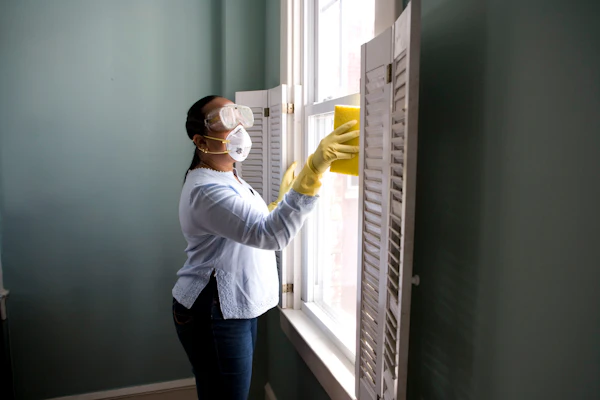
Trained technicians for residential pipeline, mixer faucets, and sanitary installations in Patna.
Quick On-Call Service
+91 7070459302Meet Our Professional Plumber
Expert on-site plumbing craftsmanship serving Patna households and commercial premises with prompt response and transparent pricing.
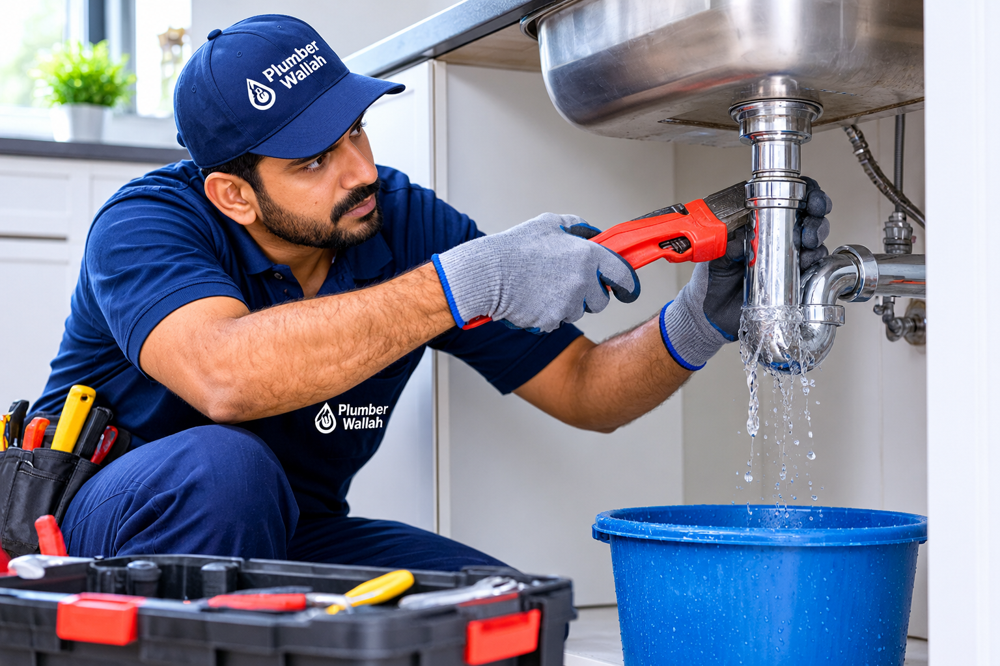
Plumbing Service Professional
Ram Krishna Nagar, Patna
Lead Plumbing Professional
Plumbing Service Professional
Professional Biography
Specializing in prompt residential and commercial plumbing repairs across Patna. Committed to honest upfront quotes, clean and respectful workmanship, and durable, leak-free pipeline solutions.
Field Experience
Projects Completed
Google Customer Rating
Based on 163 authentic reviews on Google Business Profile.
Plumbing Skills & Areas of Specialization
Verified Qualifications & Service Standards
Comprehensive Plumbing Solutions in Patna
From minor tap leakage repairs and emergency drain clearing to full bathroom pipelines and water tank setups across residential and commercial properties.
General Plumbing Repairs
Fast diagnosis and durable repairs for leaking faucets, broken pipes, erratic water pressure, and routine home plumbing wear-and-tear.
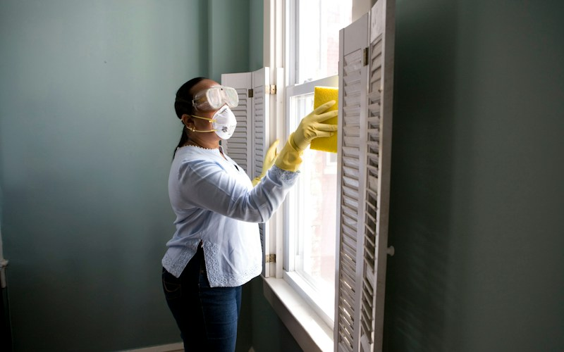
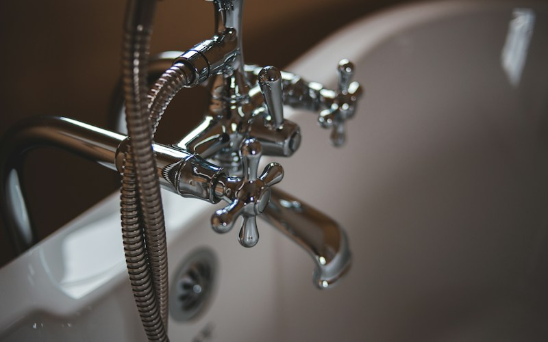
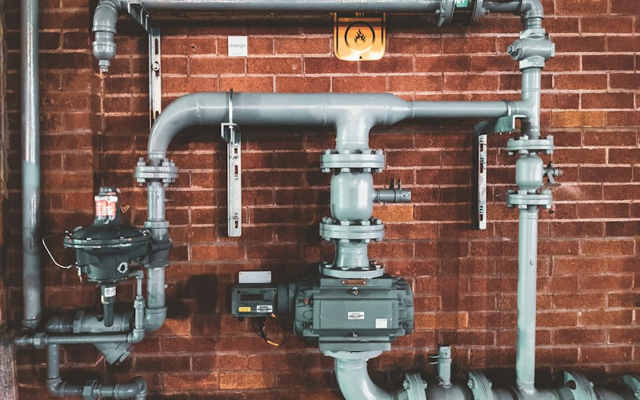
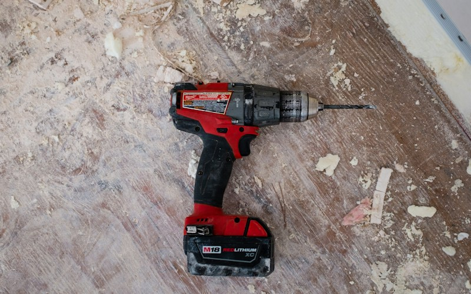
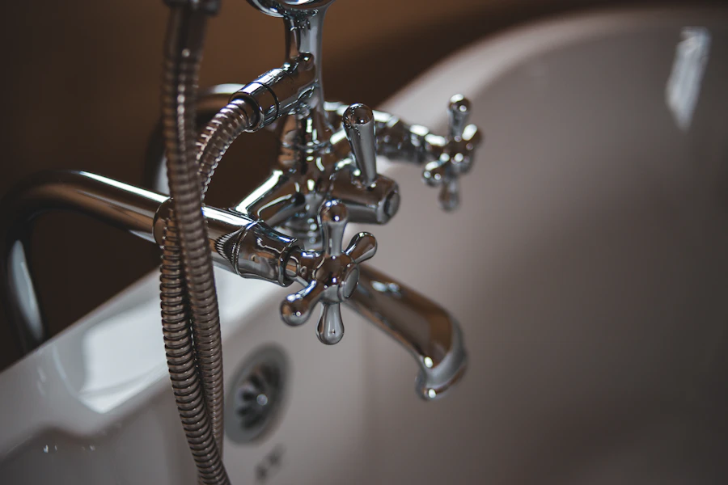
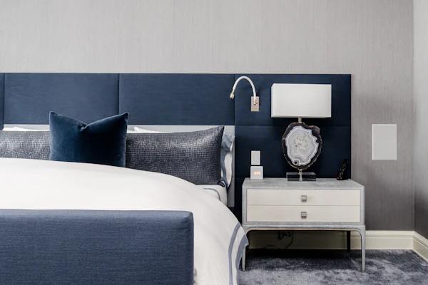
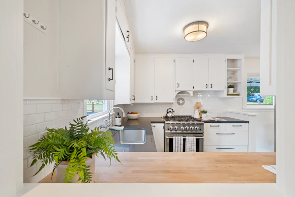
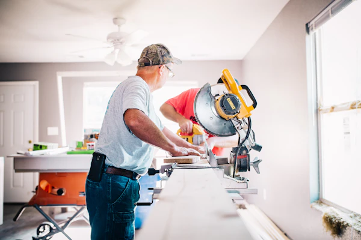
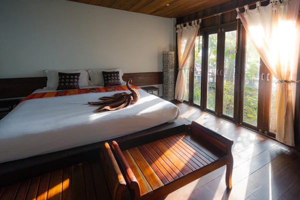
Need a custom plumbing assessment not listed above?
Share photos or a short video of the leaking pipe or fitting directly on WhatsApp for an accurate evaluation.
Clean & Accountable Execution
Respecting your home space with neat tools, zero unnecessary wall damage, and tidy post-work cleanup.
Dedicated Plumbing Workmanship for Patna Homes & Businesses
At Deepak Plumbing Service, we focus on delivering dependable, transparent, and durable plumbing solutions across Patna, Bihar. Whether tackling a persistent tap drip, restoring flow to a blocked kitchen drain, or laying complete bathroom pipeline infrastructure, our goal is to resolve your plumbing troubles systematically rather than applying temporary patches.
We understand that plumbing disruptions cause stress, water wastage, and potential structural dampness. That is why we emphasize clear communication before, during, and after every assignment—explaining the root cause of the leak or blockage, discussing repair choices openly, and testing the completed work thoroughly under normal operating water pressure.
Accurate root-cause diagnosis to fix joint leaks, pressure loss, and blockages with lasting materials.
Direct WhatsApp and phone consultations with honest assessment before starting any work on-site.
Careful handling of bathrooms and kitchens to avoid chipping tiles or leaving messy residue behind.
Serving Beur, Anisabad, Bataura, Kurkuri, and surrounding Patna areas with responsive visit scheduling.
Realistic, Dependable Plumbing Care for Patna
We avoid exaggerated marketing claims and focus on what homeowners and business operators genuinely care about: prompt response, honest assessment, and tidy craftsmanship.
Residential & Commercial Support
Equipped to handle plumbing assignments for independent family houses, high-rise apartments, offices, and commercial spaces across Patna.
Help with Common Plumbing Problems
Quick resolution for dripping faucets, low shower pressure, jammed flush tanks, and slow kitchen sink drainage.
Clear Communication About the Work
We explain what needs fixing, the pipe or valve choices available, and upfront estimates before dismantling any fitting.
Practical Repair & Installation Solutions
Focused on durable fixes using appropriate CPVC/PVC adhesives and brass fittings rather than temporary makeshift seals.
Attention to Workmanship & Cleanliness
Careful work that protects your tiles, sanitary finishes, and counters, leaving the repair area clean and ready to use.
Convenient Call & WhatsApp Enquiries
Simple, immediate direct messaging. Send photos or voice notes of your plumbing problem to get quick guidance.
Dedicated Local Patna Coverage
Centrally serving Jagdeo Path (Khajpura), Beur, Anisabad, Bataura, and Kurkuri, ensuring our technician is familiar with local water supply systems.
24/7 Emergency Assistance
Round-the-clock emergency assistance for active pipe ruptures, overflowing water tanks, and urgent bathroom blockages.
Visual Overview of Plumbing Work Standards
Explore typical pipeline routing, bathroom fixture alignment, water tank manifolds, and sanitary fittings installed across residential and commercial buildings.
Concealed Bathroom Pipeline Fitting
Precision aligned hot & cold CPVC concealed pipeline layout before bathroom tile installation.
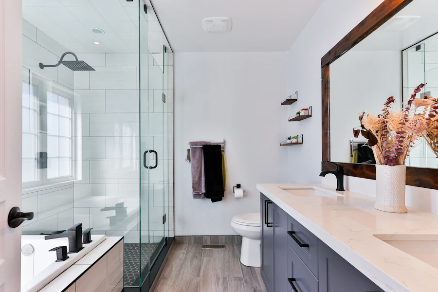
Designer Basin Mixer & Vessel Sink
Counter-top ceramic basin and single-lever chrome mixer installation with concealed pop-up drain.
Under-Sink Kitchen Trap & Water Lines
Neat modular kitchen under-counter drainage assembly with bottle trap and shutoff angle valves.
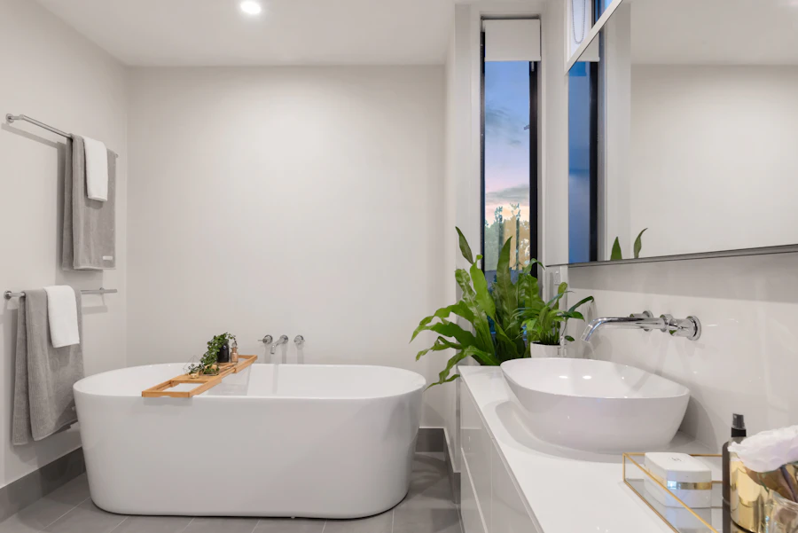
Modern Wall-Mount Diverter & Shower Head
Dual-control thermostatic shower fixture and ceiling rain shower installation.
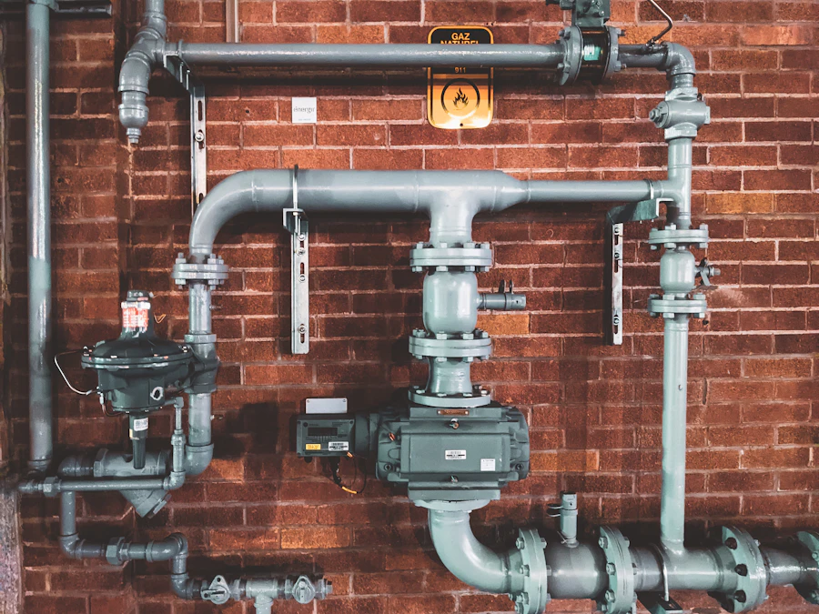
Ceramic Disc Quarter-Turn Brass Faucet
Replacement of corroded household tap with heavy brass chrome faucet with aerator mesh.
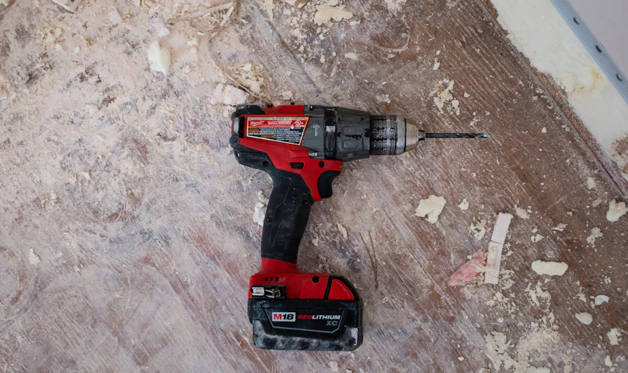
Chamber Inspection & SWR Drainage Line
External house drainage line overhaul with rubber-ring sealed SWR pipes to prevent back-seepage.
Rooftop Water Tank Header & Manifold
Dual tank interconnection with individual isolation valves, air vents, and overflow drainage pipe.
Multi-Floor Residential Plumbing Risers
Full-building vertical plumbing duct installation for residential apartments in Patna.
Dripping Valve to Leak-Free Shutoff Replacement
Before & After: Corroded dripping iron valve replaced with modern brass quarter-turn ball valve.
Plumbing Service Areas Across Patna, Bihar
Deepak Plumbing Service provides targeted on-site plumbing visits across our confirmed local service zones. Whether you need an emergency plumber in Jagdeo Path & Khajpura, pipe leak repair in Beur, tap replacement in Anisabad, or water tank connections in Bataura and Kurkuri, we are within prompt driving distance.
Jagdeo Path (Khajpura)
Primary service hub for fast local response, emergency leak troubleshooting, and residential bathroom fittings.
Beur
Fast emergency leak repairs, residential pipeline work, and sanitary ware installations.
Anisabad
Complete household and commercial plumbing services along Anisabad Golambar and residential colonies.
Bataura
Reliable plumbing solutions including water tank connections, pump pipelines, and household drainage.
Kurkuri
New pipeline installation, bathroom renovation plumbing, and fixture repairs for homes and apartments.
Common Plumbing Problems We Solve Daily in Patna
Due to local ground water properties and varied municipal pipeline pressures in Patna, households and housing apartments frequently encounter specialized plumbing challenges:
Pipe Leakage & Seepage
Pinhole joint leaks in concealed bathroom lines causing damp patches on walls. We diagnose and repair CPVC and GI lines accurately.
Drain Blockages & Choked Traps
Food grease in kitchen sinks and hair deposits in bathroom floor drains. Mechanical clearing restores smooth water discharge.
Rooftop Tanks & Motor Pumps
Float valve failures leading to roof overflows and motor airlocks preventing water from climbing up. We service tank headers and NRV valves.
Customer Reviews & Transparency Policy
We value genuine client experiences from real households and commercial premises across Patna. In accordance with honest business ethics, we never publish fabricated customer names or artificial testimonials.
Have You Used Deepak Plumbing Service in Patna?
Your honest feedback helps your neighbours in Jagdeo Path, Beur, Anisabad, and Patna find trustworthy plumbing assistance, and helps us continuously maintain our workmanship and punctuality standards.
Official Google Business Profile link is managed directly by the business owner. Verified customer reviews will display directly from the live Google profile.
We inspect the problem alongside you and explain the repair method upfront before touching any pipeline.
We install quality fittings and ensure all Teflon tapes, solvent cements, and washers are properly seated.
We pressurize the repaired line, check for zero dripping in front of you, and clean up the work area.
Frequently Asked Questions
Clear answers about booking, emergency response, service areas in Patna, and plumbing repair estimates.
Get In Touch for Fast Plumbing Service in Patna
Send an instant WhatsApp message, call directly for urgent leaks, or send your plumbing requirements using our service form.
Working Hours
Monday to Sunday: 7:00 AM – 9:00 PM
24/7 Emergency Plumbing Assistance for burst pipes, flooding & critical leaks
Book a Plumbing Service Visit
Fill in your requirements below. You can send it directly to our technician via WhatsApp for immediate response.